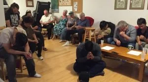
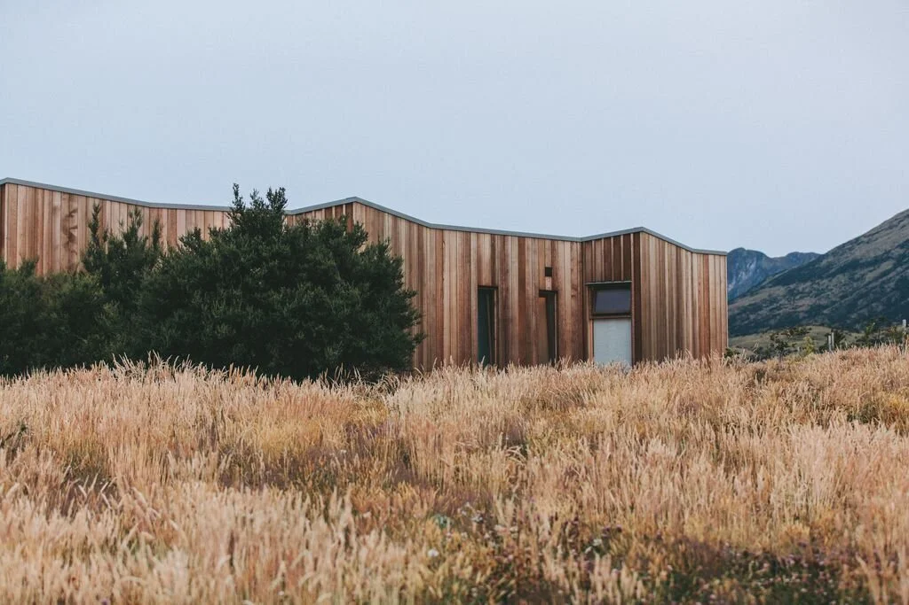
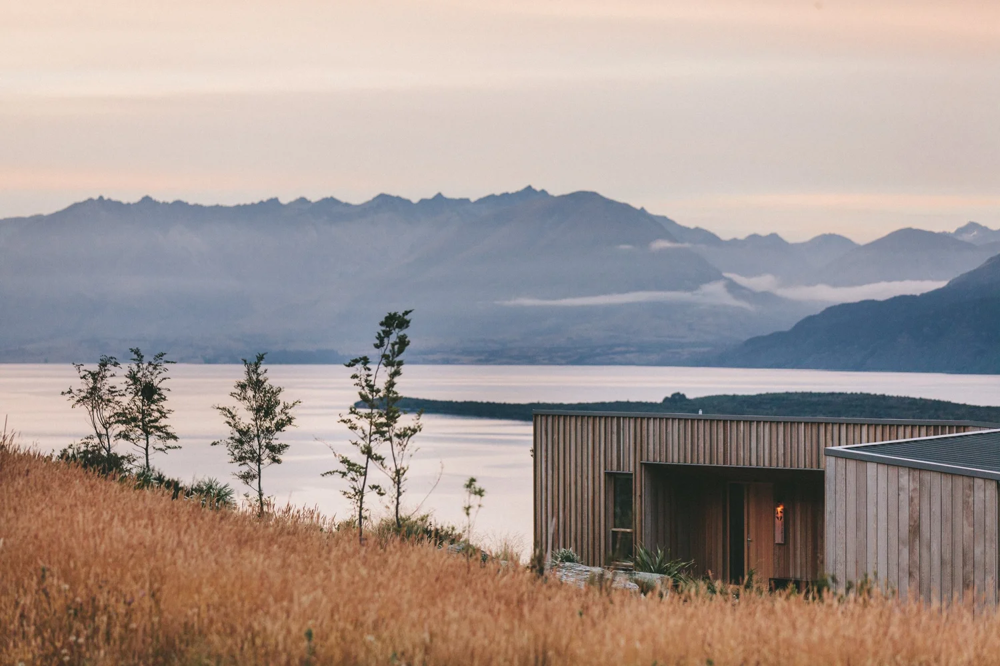

歡樂團契
Fun Fellowship
歡樂團契
Fun Fellowship
我們的成人家庭小組——F.U.N. 團契（Families United in His Name，以主之名聯合的家庭）每月第二及第四個週六於教會聚會，時間為下午六時至八時。F.U.N. 團契服務尋求團契和靈命成長的成人及家庭。我們的聚會包括百樂晚餐和查經。今年，我們的團契將查讀羅馬書。每次聚會最後以禱告結束。如需更多資訊，請發送電郵至 george.ang@3ds.com 聯絡 George Ang。我們很高興歡迎更多家庭加入！
Our Adult Family group called F.U.N. Fellowship (Families United in His Name) meets on the 2nd and 4th Saturdays at the church from 6–8 PM. FUN caters to adults and families who seek fellowship and spiritual growth. Our gatherings involve a potluck dinner and Bible study. This year, our fellowship will be studying the book of Romans. We end each of our meetings in prayer. For more info, please email George Ang at george.ang@3ds.com. We are happy to see more families join us.
♥ 聚會時間：每月第二及第四個週六，下午六時至八時 ♥
♥ Meeting Time: 2nd and 4th Saturdays of each month, 6:00–8:00 PM ♥
團契相片集
Fellowship Gallery



Join Us Online
無法親自出席？線上觀看直播或隨時收看錄影。
Can't make it in person? Watch our services live or access recordings anytime.